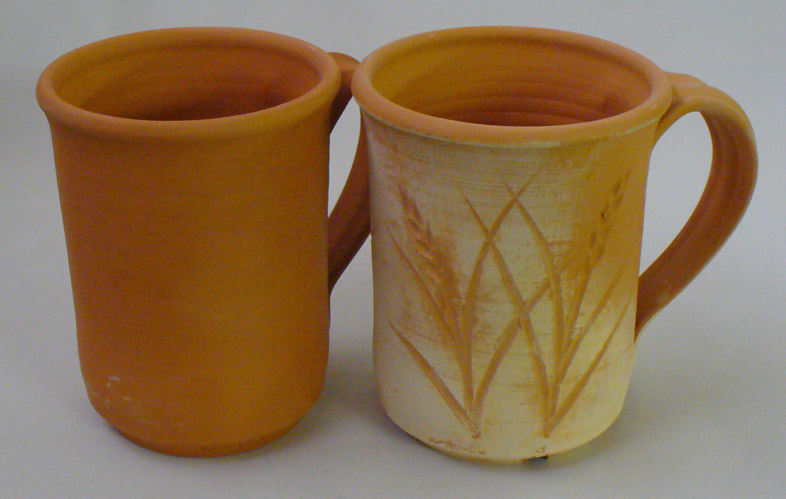
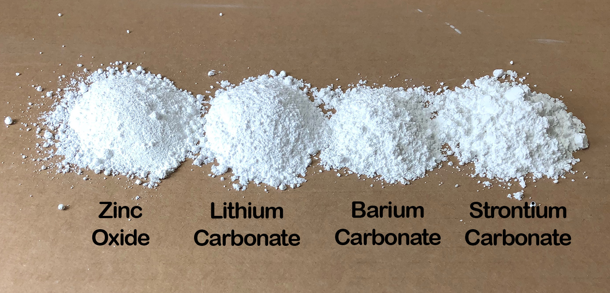

Barium Carbonate
Alternate Names: Barium Carb, Witherite
| Oxide | Analysis | Formula | Tolerance |
|---|---|---|---|
| BaO | 77.66% | 1.00 | |
| CO2 | 22.34% | n/a | |
| Oxide Weight | 153.30 | ||
| Formula Weight | 197.40 | ||
Notes
Barium carbonate powder is dense and white and is manufactured either from the mineral barite (BaSO4) or from barium chloride. Subsequently, a precipitation process is used to get the carbonate form. There are several crystalline forms of BaCO3, alpha is the most stable.
Barium carbonate is very stable thermally and does not readily disassociate unless at least some CO is available in the kiln atmosphere (i.e. reduction). BaCO3 is reduced to the unstable BaCO2 in the reaction:
BaCO3 + CO -> BaCO2 + CO2
While BaCO2 has a high melting temperature, it will break down readily in a glaze melt (liberating the BaO for glass building). It decomposes even more readily during glaze melting in a reduction atmospheres. The dissolution process happens most quickly if BaCO3 is present in small amounts (e.g. 5% or less). Even if present in larger amounts, the glaze matrix can solidify with both types, one participating in the glass microstructure and the other acting as a refractory filler, opacifier and matting agent (especially in low-temperature glazes). Effects produced when baria is acting as a filler are sometimes mistaken for those of a true baria crystal matte. Such will likely leach toxic BaO (other oxides will opacify or produce a low fire matte i.e. CaO, MgO, Alumina, Zircon).
Barium carbonate produces gases as it decomposes and these can sometimes cause many pinholes or blisters in glazes. There are barium frits available (e.g. Fusion F-403 has 35% BaO), incorporating one of them to source it instead is a classic application of glaze chemistry calculations. The resultant glaze will be more fusible and will have better clarity and fewer defects.
In art ceramics barium carbonate is popular for the production of classic barium crystal mattes, BaO readily forms crystalline phases during cooling. These are dependent on adequate kiln temperatures, cooling cycle and the chemistry of the host glaze (a slightly reducing atmosphere is also beneficial). Some have observed that in some formulations, barium crystallizes so well that it will occur even with very rapid cooling. Barium can act to initiate crystal development in other chemistries, for example, metallic glazes can benefit by the addition of some barium carbonate.
BaO can often be sourced from a barium frit (like Ferro CC-257) instead of raw barium carbonate, provided that the percentage is not too high. Do not assume that BaO is necessary in every glaze in which it appears. In some recipes, BaO can be substituted for SrO or CaO and even MgO (using glaze chemistry software of course) without losing the color or surface (bright glossy blues, for example).
Barium carbonate is commonly added to clay bodies in small amounts (0.2-0.8%) to halt fired surface scumming or efflorescence It is slightly soluble in water and provides Ba++ ions to link with SO4-- ions in the water to form BaSO4 (barium sulphate). This new sulphate molecular form is much less soluble (2-3 mg/L), so it stays internal (rather than migrating to the surface during drying). However, companies try to minimize the use of barium (or even high clays with high soluble salts) because the barium sulphate generates sulphuric acid during firing and it corrodes kiln refractories. To get the best dissolution it is best to add the barium to the water first and mix as long as possible, then either add the water to the other dry ingredients (for plastic bodies) or add the other ingredients to the water (for slips).
See Metallurgical and Materials Transactions Volume 42B, August 2011. Page 901 for an article exploring Ba-Al-Si systems at higher temperatures.
Related Information
Soluble salts on cone 04 terra cotta clay bodies

This picture has its own page with more detail, click here to see it.
Low temperature clays are far more likely to have this issue. And if present, it is more likely to be unsightly. The salt-free specimens have 0.35% added barium carbonate.
The same clays and firing, but one tiny difference

This picture has its own page with more detail, click here to see it.
An example of how effective barium carbonate is at precipitating the soluble salts in a terra cotta clay. These two unglazed, cone 04 fired, mugs are made from the same clay, but the one on the left has 0.35% added barium carbonate.
The magic of a small barium carbonate addition to a clay body

This picture has its own page with more detail, click here to see it.
Two bisqued terracotta mugs demonstrate efflorescence. The clay on the right has 0.35% added barium carbonate (it precipitated the natural soluble salts dissolved in the clay and prevented them from coming to the surface with the water and being left there during drying). The process is called efflorescence and is the bane of the brick and terra cotta tile industries. The one on the left is the natural clay. The unsightly appearance is fingerprints from handling the piece in the leather-hard state, the salts have concentrated in these areas (the other piece was also handled).
Frits instead of raw zinc, lithium, barium, strontium

This picture has its own page with more detail, click here to see it.
Raw material sources of zinc, lithium, barium, strontium have issues (e.g. precipitates in glaze slurries, toxicity, high drying shrinkage and carbon burnoff that affect laydown and fired surface defects like pinholes, blisters, orange peeling, crystallization). Yet the oxides that these materials supply to the glaze melt - ZnO, Li2O, BaO and SrO, can be sourced from frits which melt much better and remove most of the problems. Consider examples made by Fusion:
-Frit F-493 has 11% Li2O
-F-403 has 35% BaO
-F-581 has 39% SrO
-FZ-16 has 15% ZnO
These frits source other oxides but such are common in most glazes and glaze calculation can be used to retain the overall chemistry. Although these are expensive, the benefits are game changers. But there is a problem: Potters can't get these. Therefore they have difficulty creating the dazzling visual effects of many commercial glazes.
Example of the blisters from Barium Carbonate decomposition

This picture has its own page with more detail, click here to see it.
This is a combination dolomite/barium matte. It has been fired at cone 10 reduction. It contains 17% barium carbonate and 17% dolomite (in a nepheline syenite base). Most carbonates decompose and gas off the CO2 well before the glaze melts, but not barium carbonate. It can turn the glaze matrix into an "aero chocolate bar" of bubbles. The glaze melt viscosity of some glazes, like this one, makes them vulnerable to preserving the bubbles as dimples or sharp-edged holes.
Links
| URLs |
http://www.epa.gov/epaoswer/hazwaste/id/inorchem/docs/barium.pdf
Information on baruim manufacturing methods |
| URLs |
http://en.wikipedia.org/wiki/Barium_carbonate
Barium carbonate at Wikipedia |
| URLs |
http://ceramicartsdaily.org/ceramic-glaze-recipes/glaze-chemistry-ceramic-glaze-recipes-2/leaving-bariumville-replacing-barium-carbonate-in-cone-10-glazes/
Article on substituting BaO for SrO, CaO, MgO |
| URLs |
http://www.solvay.com/en/binaries/Bariumcarbonat_prevention-efflorescence-en-188992.pdf
Document of using Barium Carbonate in Brick to prevent efflorescence |
| Hazards |
Barium Carbonate in Glazes
|
| Hazards |
BARIUM and COMPOUNDS Toxicology
|
| Hazards |
Barium Carbonate in Clay Bodies
Considerations regarding the use of barium carbonate in pottery and structural clay bodies for precipitation of soluble salts. |
| Temperatures | Barium carbonate melts (1360-) |
| Temperatures | Decomposition of Barium Carbonate (1025-) |
| Typecodes |
Generic Material
Generic materials are those with no brand name. Normally they are theoretical, the chemistry portrays what a specimen would be if it had no contamination. Generic materials are helpful in educational situations where students need to study material theory (later they graduate to dealing with real world materials). They are also helpful where the chemistry of an actual material is not known. Often the accuracy of calculations is sufficient using generic materials. |
| Typecodes |
Flux Source
Materials that source Na2O, K2O, Li2O, CaO, MgO and other fluxes but are not feldspars or frits. Remember that materials can be flux sources but also perform many other roles. For example, talc is a flux in high temperature glazes, but a matting agent in low temperatures ones. It can also be a flux, a filler and an expansion increaser in bodies. |
| Oxides | BaO - Barium Oxide, Baria |
| Minerals |
Barytes, Barite
Barite (65.7% BaO, 34.3% SO4) is the main mineral from which barium carbonate is sourced. It is mine |
| Minerals |
Witherite
Barium carbonate mineral. |
| Minerals |
Gypsum
Gypsum is hydrated calcium sulphate, CaSO4 2H2O. It is the crystalline mineral from which plaster is |
| Articles |
Soluble Salts in Minerals: Detailed Overview
There are a wide range of soluble materials that can be in clay, this article enumerates them, provides procedures on identifying and measuring them and outlines what to do about the problem. |
| Glossary |
Sulfates
Soluble sulfates in clay produce efflorescence, an unsightly scum that mars the fired surface of structural and functional ceramic products. |
| Glossary |
Efflorescence
A common problem with dry and fired ceramic. It is evident by the presence of a light or dark colored scum on the dry or fired surface. |
| Glossary |
Matte Glaze
Random material mixes that melt well overwhelmingly want to be glossy, creating a matte glaze that is also functional is not an easy task. |
| Materials |
Ferro Frit CC-257
|
| Materials |
Sodium Bicarbonate
|
| Media |
A Broken Glaze Meets Insight-Live and a Magic Material
Use Insight-Live.com to do major surgery on a feldspar saturated cone 10R glaze recipe with multiple issues: blistering, pinholing, crazing, settling, dusting and possibly leaching! |
Data
| Density (Specific Gravity) | 4.27 |
|---|
Mechanisms
| Glaze Opacifier | If available in sufficient amount, barium oxide will promote crystallization of a melt during cooling, thus imparting a measure of opacity. |
|---|
 PayPal | No tracking, No ads, No paywall, No transient content! Just organized, concise information constantly updated and improved. Was this helpful? Consider supporting me. |
| By Tony Hansen Follow me on        |  |
Got a Question?
Buy me a coffee and we can talk 

https://digitalfire.com, All Rights Reserved
Privacy Policy